<!-- .slide: data-state="front hide-controls" --> <div id="title">Blockchains</div> <div id="subtitle">Data Privacy and Security</div> <div id="date">Data Science and Management (DASMA)</div> --- ## ⚠️ Important Disclaimers <div class="content-center"> Before we begin, please note: 1. **This lecture focuses on the technology** — we will study how blockchains work from a technical and security perspective 2. **Most blockchain projects are scams** — the vast majority of tokens, NFTs, and DApps are designed to extract money from retail investors (pump & dump, rug pulls) 3. **Cryptocurrencies are extremely volatile** — prices can drop 50%+ in days; they are unsuitable as a store of value or unit of account 4. **You must pay taxes in Italy** — crypto gains are taxable (33% capital gains tax); failure to declare is tax evasion and you have to declare ownership 5. **Labs use testnets only** — we will use Sepolia (Ethereum testnet) with **zero real-world monetary value**. You will never need to spend real money. </div> --- <!-- .slide: data-state="break-blue hide-controls" --> # Motivation --- ## The Problem with Digital Money <div class="content-center"> Physical cash has **built-in trust properties**: <div class="fragment" data-fragment-index="0"> - **Legality**: banknotes have anti-counterfeiting features (watermarks, holograms, etc.) - **Uniqueness**: a physical banknote can only be in one place at a time - **Ownership**: possession of a banknote implies ownership <br/> </div> <div class="fragment" data-fragment-index="1"> **Digital data** is fundamentally different: it can be **copied perfectly** and **sent to multiple recipients simultaneously**. <br/> </div> <div class="fragment" data-fragment-index="2"> <div class="cell-center"> ***How can we build a trustworthy digital payment system?*** </div> </div> </div> --- ## The Double Spending Problem <div class="content-center"> <div class="cell-center"> Alice has 10 digital coins. She sends them **both** to Bob and to Charlie at the same time: </div> <br/> <div class="cell-center"> <p>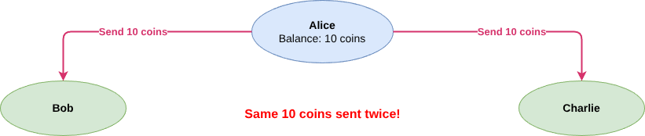</p> </div> <br/> <div class="fragment" data-fragment-index="0"> <div class="cell-center"> Who actually received the money? **Both** think they did! </div> </div> <div class="fragment" data-fragment-index="1"> <div class="cell-center"> We need a system that ensures each coin can only be **spent once**. </div> </div> </div> --- ## Traditional Solution: Trusted Third Party <div class="content-center"> The classic approach: use a **central authority** (e.g., a bank) to validate transactions. <div class="cell-center" style="padding: 10px;"> <p>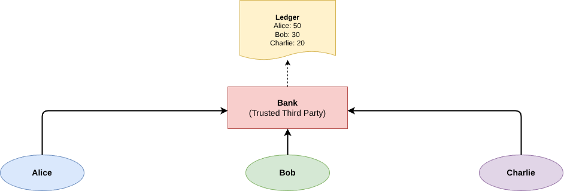</p> </div> <div class="fragment" data-fragment-index="0"> The bank maintains a **ledger** (a record of all balances and transactions) and ensures: - Alice has enough funds before approving a transfer - Each transaction is processed only once <br/> </div> <div class="fragment" data-fragment-index="1"> <div class="alert alert-error"><b>PROBLEMS</b>: single point of failure, censorship, fees, requires trust in the authority, the authority can be corrupted or hacked.</div> </div> </div> --- ## Can We Remove the Trusted Third Party? <div class="content-center"> <div class="alert alert-hint"><b>IDEA</b>: Instead of one central authority, let <b>everyone</b> keep a copy of the ledger.</div> <div class="cell-center" style="padding-top: 10px;"> <p>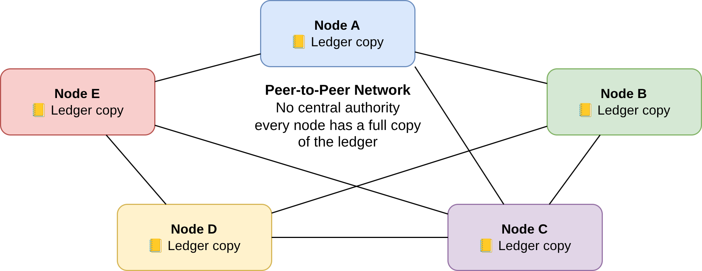</p> </div> <div class="fragment" data-fragment-index="0"> New challenges arise: - How do all nodes **agree** on the state of the ledger? (**consensus**) - How do we prevent a malicious node from **forging** transactions? - How do we prevent **double spending** without a central authority? <br/> </div> <div class="fragment" data-fragment-index="1"> <div class="cell-center"> This is exactly what **blockchain** solves. </div> </div> </div> --- ## History of Blockchain <div class="content-center"> | Year | Event | |------|-------| | 1988 | Proof-of-work concept (Dwork & Naor) | | 1991 | Cryptographically secure chain of blocks (Haber & Stornetta) | | 1994 | Smart contracts concept (Nick Szabo) | | 2008 | **Bitcoin** whitepaper (Satoshi Nakamoto) | | 2012 | Proof-of-stake (Peercoin) | | 2013 | **Ethereum** whitepaper (Vitalik Buterin & Gavin Wood) | | 2014 | Tendermint generic proof-of-stake engine (Kwon) | | 2022 | Ethereum 2.0 adopts proof-of-stake ("The Merge") | </div> --- ## Major Blockchains <div class="content-center"> <table style="border: none; border-collapse: collapse; width: 100%;"> <tr> <td style="text-align: center; padding: 15px; border: none;"><img src="img/logo-bitcoin.png" style="height: 60px;"><br><b>Bitcoin</b><br><small>2009 · PoW · Digital currency</small></td> <td style="text-align: center; padding: 15px; border: none;"><img src="img/logo-ethereum.png" style="height: 60px;"><br><b>Ethereum</b><br><small>2015 · PoS · Smart contracts</small></td> <td style="text-align: center; padding: 15px; border: none;"><img src="img/logo-bnb.png" style="height: 60px;"><br><b>BNB Chain</b><br><small>2017 · PoSA · DeFi/Exchange</small></td> <td style="text-align: center; padding: 15px; border: none;"><img src="img/logo-solana.png" style="height: 60px;"><br><b>Solana</b><br><small>2020 · PoS+PoH · High throughput</small></td> </tr> <tr> <td style="text-align: center; padding: 15px; border: none;"><img src="img/logo-cardano.png" style="height: 60px;"><br><b>Cardano</b><br><small>2017 · PoS · Research-driven</small></td> <td style="text-align: center; padding: 15px; border: none;"><br><b>XRP Ledger</b><br><small>2012 · Consensus · Payments</small></td> <td style="text-align: center; padding: 15px; border: none;"><img src="img/logo-polkadot.png" style="height: 60px;"><br><b>Polkadot</b><br><small>2020 · NPoS · Interoperability</small></td> <td style="text-align: center; padding: 15px; border: none;"><img src="img/logo-avalanche.png" style="height: 60px;"><br><b>Avalanche</b><br><small>2020 · PoS · Subnets</small></td> </tr> <tr> <td style="text-align: center; padding: 15px; border: none;"><p>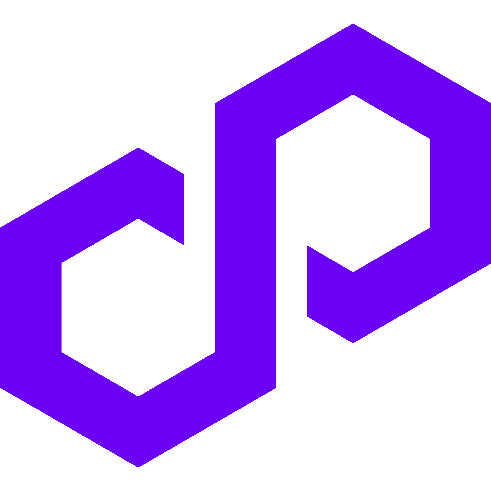</p><br><b>Polygon</b><br><small>2017 · PoS · Ethereum L2</small></td> <td style="text-align: center; padding: 15px; border: none;"><img src="img/logo-chainlink.png" style="height: 60px;"><br><b>Chainlink</b><br><small>2017 · Oracles · Data feeds</small></td> <td style="text-align: center; padding: 15px; border: none;"><img src="img/logo-litecoin.png" style="height: 60px;"><br><b>Litecoin</b><br><small>2011 · PoW · Fast payments</small></td> <td style="text-align: center; padding: 15px; border: none;"><img src="img/logo-tron.png" style="height: 60px;"><br><b>TRON</b><br><small>2017 · DPoS · Entertainment</small></td> </tr> </table> </div> --- <!-- .slide: data-state="break-blue hide-controls" --> # Key Concepts --- ## What is a Blockchain? <div class="content-center"> A blockchain is a **distributed, append-only ledger** of transactions, grouped into **blocks**, where each block is cryptographically linked to the previous one. <div class="cell-center"> <p>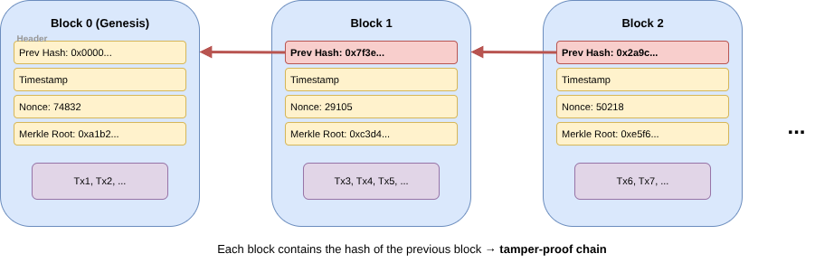</p> </div> <div class="fragment" data-fragment-index="0"> Key properties: - **Immutable**: changing a block invalidates all subsequent blocks - **Distributed**: every node in the network has a copy - **Transparent**: all transactions are publicly verifiable - **Decentralized**: no single entity controls the ledger </div> </div> --- ## Cryptographic Building Blocks <div class="content-center"> Blockchains rely on the cryptographic primitives we have already studied: 1. **Cryptographic hash functions** (e.g., SHA-256, Keccak-256): - Link blocks together (each block stores the hash of the previous block) - Compact representation of data (Merkle trees) - Mining puzzle (proof-of-work) <br/> <div class="fragment" data-fragment-index="0"> 2. **Digital signatures** (e.g., ECDSA): - Prove identity of the sender (**authenticity**) - Prevent denial of sending (**non-repudiation**) - Ensure the transaction was not altered (**integrity**) <br/> </div> <div class="fragment" data-fragment-index="1"> 3. **Asymmetric key pairs** (private key → public key → address): - The private key is your identity (keep it **secret**!) - The public key / address is shared with others </div> </div> --- ## How Trust Works in a Blockchain <div class="content-center"> In a centralized system, we trust the **authority**. In a blockchain, we trust **the protocol**. <div class="fragment" data-fragment-index="0"> The consensus protocol ensures that: - All honest nodes **agree** on the same history of transactions - **Invalid transactions** (e.g., double spends) are rejected by the network - Producing new blocks requires **effort** (proof-of-work) or **stake** (proof-of-stake), making attacks expensive <br/> </div> </div> --- ## Incentive Design: Why Nodes Behave <div class="content-center"> The protocol is designed so that **honest behavior is the most profitable strategy**: - **Miners/validators earn rewards** (block subsidy + fees) only if they produce **valid blocks** accepted by the rest of the network - Producing **invalid blocks** (e.g., with forged transactions) wastes time and resources — peers will simply reject them - In PoS, dishonest validators get their stake **slashed** (destroyed) — misbehavior is directly punished financially <br/> <div class="fragment" data-fragment-index="0"> <div class="cell-center"> The game theory is simple: **it is more profitable to play by the rules** than to try to cheat. A rational, self-interested node will always choose to be honest. </div> </div> </div> --- ## Why You Cannot Arbitrarily Change the Rules <div class="content-center"> What if a node decides to modify its software to, e.g., give itself extra coins or accept invalid transactions? - Every other node in the network independently **validates** every block and transaction against the **same set of rules** - A block produced with modified rules will be **rejected** by all honest nodes — it simply won't be accepted into their chain - The rogue node ends up on a **fork of one** — alone, with a worthless chain that nobody else recognizes <br/> <div class="fragment" data-fragment-index="0"> Changing the rules only works if the **majority of the network agrees** to adopt the change. This is called a **hard fork** — it creates a new, incompatible blockchain (e.g., Ethereum Classic split from Ethereum in 2016 after the DAO hack). </div> <div class="fragment" data-fragment-index="1"> An unexpected or contentious hard fork **splits the community** and the market: both resulting chains compete for users, miners, and value. Historically, the minority chain's cryptocurrency **loses most of its value** — in some cases dropping to near zero. <br/> </div> <div class="fragment" data-fragment-index="2"> This creates a strong **economic incentive for caution**: nodes (miners, validators, exchanges, wallet providers) are very careful about accepting new protocol specifications, because a chaotic fork can destroy the value of their holdings and hardware investments. </div> </div> --- <div class="content-center"> In practice, protocol changes go through a **formal governance process**: - A **proposal** is published (e.g., BIP for Bitcoin, EIP for Ethereum) describing the change - The community discusses, reviews, and tests the proposal - Miners/validators **signal support** by including a flag in the blocks they produce (on-chain voting) - The change is only activated when a **supermajority** (e.g., 95% for Bitcoin) signals readiness within a defined time window </div> --- ## Limits of Trust <div class="content-center"> However, this trust model has limits: <br/> <br/> <div class="fragment" data-fragment-index="0"> <div class="cell-center"> If an attacker controls **more than 50%** of the network's computing power (or stake), they can **rewrite history**. This is known as the **51% attack** (or majority attack). </div> </div> </div> --- ## The 51% Attack (Majority Attack) <div class="content-center"> A malicious miner with >50% of the total hashing power can: 1. Spend coins on the **public chain** (e.g., buy goods from a merchant) 2. Simultaneously mine a **private chain** where that transaction does not exist 3. Since the attacker has more power, the private chain grows **faster** 4. When ready, **broadcast** the longer private chain — all nodes switch to it 5. The original spend is erased: the attacker has the goods **and** the coins! <br/> <div class="cell-center"> <p>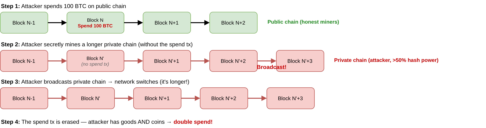</p> </div> <div class="fragment" data-fragment-index="0"> <div class="cell-center"> This is a **double spend** attack. The attacker effectively spends the same coins twice. </div> </div> </div> --- ## Why Is the 51% Attack Hard in Practice? <div class="content-center"> For major blockchains (Bitcoin, Ethereum), acquiring >50% of the network is **extremely expensive**: - Bitcoin: requires billions of dollars in mining hardware and electricity - Ethereum (PoS): requires staking >50% of all staked ETH ($50B+) <br/> <div class="fragment" data-fragment-index="0"> Additional protections: - Merchants wait for multiple **confirmations** (blocks on top of the transaction) before considering it final - The deeper a transaction is buried in the chain, the harder it is to reverse <br/> </div> <div class="fragment" data-fragment-index="1"> **However**, smaller blockchains with less total hashing power have been successfully attacked (e.g., Ethereum Classic in 2019). </div> </div> --- <!-- .slide: data-state="break-blue hide-controls" --> # Bitcoin --- ## Bitcoin: A Peer-to-Peer Electronic Cash System <div class="content-center"> Published in 2008 by the pseudonymous **Satoshi Nakamoto**, Bitcoin is the first **fully decentralized** electronic cash system. <div class="fragment" data-fragment-index="0"> Core components: - A **peer-to-peer network** (the Bitcoin protocol) - A **distributed ledger** (the blockchain) - **Decentralized transaction validation** and currency issuance (mining) - A **consensus mechanism** (proof-of-work) <br/> </div> <div class="fragment" data-fragment-index="1"> No single state or organization can shut down the Bitcoin network. </div> </div> --- ## Bitcoin: How It Works (High Level) <div class="content-center"> 1. Each user generates a **private key** (random 256 bits) and derives a **public address** 2. The address is like a bank account number (IBAN) — it can be shared publicly 3. The private key is used to **sign transactions** — it must be kept **secret**! <br/> <div class="fragment" data-fragment-index="0"> <div class="cell-center"> <p>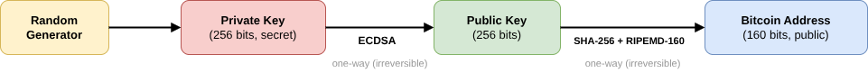</p> </div> </div> <div class="fragment" data-fragment-index="1"> Address creation is a **local, offline** operation — no interaction with the network is needed. It is fully **anonymous**. </div> </div> --- ## Bitcoin Transactions <div class="content-center"> A transaction is a signed message that transfers value from one address to another: 1. Alice's wallet selects **unspent transaction outputs (UTXOs)** as inputs 2. It specifies Bob's address as output with the amount to send 3. It specifies Alice's address as output for the **change** 4. The difference between inputs and outputs is the **transaction fee** $$\text{fee} = \sum \text{inputs} - \text{amount} - \text{change} \geq 0$$ <br/> <div class="fragment" data-fragment-index="0"> 5. Alice signs the transaction with her private key and broadcasts it 6. The network verifies the signature and processes the transaction 7. After 10 minutes, the transaction is included in a block (**confirmed**) 8. After 6 blocks (1 hour), it is considered **finalized** <br/> </div> </div> --- ## Miners and Blocks <div class="content-center"> **Miners** are special nodes that compete to add new blocks to the blockchain. They perform two critical roles: - **Transaction validation**: verify that transactions are valid (correct signatures, sufficient funds, no double spends) - **Block production**: bundle validated transactions into blocks and solve the PoW puzzle When a miner creates a new block, it: 1. Selects transactions from its **mempool** (usually prioritizing those with the highest fees) 2. Adds a special **coinbase transaction** — the first transaction in the block, which creates new bitcoins as a reward to the miner 3. Builds a Merkle tree from all transactions and computes the **Merkle root** 4. Constructs the **block header** (prev hash, Merkle root, timestamp, difficulty, nonce) 5. Solves the **proof-of-work** puzzle (finds a valid nonce) 6. Broadcasts the completed block to the network <br/> </div> --- <div class="content-center"> The miner's reward for each block consists of: $$\text{reward} = \text{block subsidy} + \sum_{i=1}^{n} \text{fee}_i$$ - **Block subsidy**: newly minted bitcoins (the only way new BTC enters circulation) - **Transaction fees**: the sum of fees from all transactions included in the block <br/> <div class="fragment" data-fragment-index="0"> As the block subsidy decreases over time, transaction fees become an increasingly important incentive for miners to keep securing the network. </div> </div> --- ## The Halving <div class="content-center"> The block subsidy is **halved** every **210,000 blocks** (approximately every 4 years): | Year | Block | Subsidy | BTC mined so far | |------|-------|---------|------------------| | 2009 | 0 | **50 BTC** | 0 | | 2012 | 210,000 | **25 BTC** | 10.5M (50%) | | 2016 | 420,000 | **12.5 BTC** | 15.75M (75%) | | 2020 | 630,000 | **6.25 BTC** | 18.375M (87.5%) | | 2024 | 840,000 | **3.125 BTC** | 19.6875M (93.75%) | | ... | ... | ... | ... | | 2140 | 6,930,000 | **0 BTC** | 21M (100%) | <br/> <div class="fragment" data-fragment-index="0"> <div class="cell-center"> The total supply of Bitcoin is **capped at 21 million BTC** — this scarcity is enforced by the protocol itself. </div> </div> </div> --- ## Merkle Trees <div class="content-center"> Transactions in a block are organized in a **Merkle tree**: a binary tree of hashes. <div class="cell-center"> <p>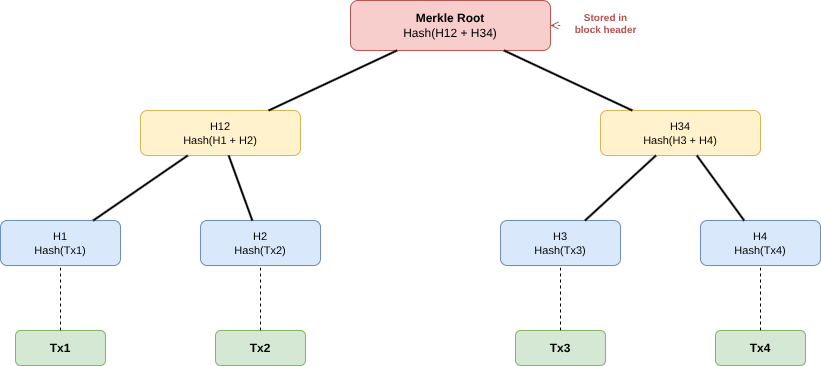</p> </div> <div class="fragment" data-fragment-index="0"> The **Merkle root** is stored in the block header. It allows: - **Efficient verification**: to prove a transaction is in a block, you only need $\\log_2(n)$ hashes (not all $n$ transactions) - **Tamper detection**: changing any transaction changes the Merkle root </div> <div class="fragment" data-fragment-index="1"> This is how lightweight wallets (e.g., mobile wallets) can verify transactions without downloading the entire blockchain. </div> </div> --- ## Forks <div class="content-center"> When two miners find a valid block at approximately the same time, the blockchain **forks**: temporarily, two competing chains exist. <div class="cell-center"> <p>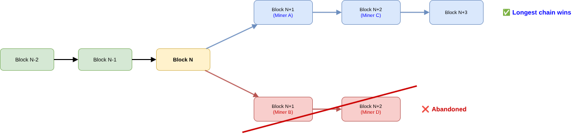</p> </div> <div class="fragment" data-fragment-index="0"> Resolution rule: **the longest (most powerful) chain wins**. - Miners always build on top of the longest chain they know - The shorter branch is eventually abandoned (its transactions return to the mempool) - This is why we wait for multiple confirmations before considering a transaction final <br/> </div> </div> --- <!-- .slide: data-state="break-blue hide-controls" --> # Proof-of-Work vs Proof-of-Stake --- ## Proof-of-Work (PoW) <div class="content-center"> The original consensus mechanism used by Bitcoin (and Ethereum until 2022). <div class="alert alert-hint"><b>IDEA</b>: make it <b>computationally expensive</b> to create a new block.</div> <br/> The miner must find a **nonce** such that: $$ \\text{hash}(\\text{block\\_header\\_with\\_nonce}) < \\text{difficulty\\_target} $$ <div class="fragment" data-fragment-index="0"> This is essentially a **brute-force search**: try random nonces until one works. - **Hard to find** a valid nonce (on average 10 minutes for Bitcoin) - **Easy to verify**: just compute one hash and check - The `difficulty` adjusts automatically to keep block time roughly constant <br/> </div> <div class="fragment" data-fragment-index="1"> The nonce in the header of the resulting block is the **proof** that the miner did the **work**. </div> </div> --- ## Why PoW Provides Security <div class="content-center"> PoW makes producing blocks **expensive** (in time, hardware, and electricity): - Creating **invalid blocks** wastes resources — peers will reject them - A single node **cannot dominate** the history, since it must compete against the combined hashing power of all other nodes - **Forks become unlikely**, since the probability of two miners finding a block simultaneously is small <br/> <div class="fragment" data-fragment-index="0"> **The cost**: PoW consumes enormous amounts of electricity. Bitcoin's energy consumption is comparable to that of **entire countries** (e.g., Argentina, Norway). <br/> </div> <div class="fragment" data-fragment-index="1"> <div class="cell-center"> ***Can we achieve consensus without wasting so much energy?*** </div> </div> </div> --- ## Proof-of-Stake (PoS) <div class="content-center"> An alternative consensus mechanism adopted by Ethereum 2.0 in September 2022 ("The Merge"). **Idea**: instead of competing with computing power, validators are chosen based on how much cryptocurrency they **stake** (lock up as collateral). <br/> <div class="fragment" data-fragment-index="0"> How it works: 1. Validators **deposit** (stake) ETH as collateral (minimum 32 ETH for Ethereum) 2. The protocol **randomly selects** a validator to propose the next block 3. Other validators **attest** (vote) that the block is valid 4. If the block is accepted, the proposer earns a **reward** 5. If a validator behaves dishonestly, their stake is **slashed** (partially or fully destroyed) <br/> </div> </div> --- ## PoW vs PoS: Comparison <div class="content-center"> | Aspect | Proof-of-Work (PoW) | Proof-of-Stake (PoS) | |--------|--------------------|-----------------------| | **Security source** | Computing power | Economic stake | | **Energy consumption** | Very high | Very low (~99.95% less) | | **Hardware** | Specialized ASICs | Standard computers | | **Attack cost** | Buy >50% of hash power | Buy >50% of staked coins | | **Penalty for misbehavior** | Wasted electricity | Stake is slashed | | **Block time** | ~10 min (Bitcoin) | ~12 sec (Ethereum) | | **Used by** | Bitcoin, Litecoin, Dogecoin | Ethereum, Cardano, Solana | </div> --- <!-- .slide: data-state="break-blue hide-controls" --> # Ethereum --- ## Ethereum: The World Computer <div class="content-center"> Ethereum is an open-source, globally **decentralized computing infrastructure** that: - Executes programs called **smart contracts** written in a **Turing-complete** language - Uses a **blockchain** to synchronize and store the system's **state** - Uses a cryptocurrency called **Ether (ETH)** to meter and constrain execution costs - Enables developers to build **decentralized applications (DApps)** <br/> <div class="fragment" data-fragment-index="0"> Key people: - **Vitalik Buterin** — co-founder, wrote the Ethereum whitepaper in 2013 - **Gavin Wood** — co-founder, wrote the Ethereum Yellow Paper (formal specification) <br/> </div> </div> --- ## Bitcoin vs Ethereum <div class="content-center"> | Aspect | Bitcoin | Ethereum | |--------|---------|----------| | **Purpose** | Digital currency | Programmable blockchain | | **Scripting** | Limited (Script, Turing-incomplete) | Full (Solidity, Turing-complete) | | **State model** | UTXO (unspent transaction outputs) | Account-based (key → value map) | | **Block time** | ~10 minutes | ~12 seconds | | **Consensus** | Proof-of-Work | Proof-of-Stake (since 2022) | | **Supply cap** | 21 million BTC | No hard cap | | **Hash function** | SHA-256 | Keccak-256 | </div> --- ## Ethereum Accounts <div class="content-center"> Ethereum has two types of accounts: <div class="cell-center" style="padding: 10px;"> <p>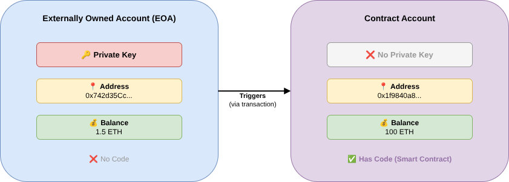</p> </div> <br/> <div class="columns-container columns-top"> <div class="col"> 1. **Externally Owned Accounts (EOA)**: - Controlled by a **private key** - Can send transactions and transfer ETH - Has a balance but **no code** </div> <div class="col"> <div class="fragment" data-fragment-index="0"> 2. **Contract Accounts**: - Controlled by **code** (smart contract) - Cannot initiate transactions on their own — must be triggered by an EOA - Has a balance **and** code </div> </div> </div> </div> --- ## Wallets <div class="content-center"> A **wallet** is a software application that manages your keys and lets you interact with the blockchain: - **Desktop wallets**: software installed on your computer - **Mobile wallets**: apps on your phone - **Web wallets**: browser extensions (e.g., **MetaMask**) - **Hardware wallets**: dedicated physical devices (e.g., Ledger, Trezor) - **Paper wallets**: printed private keys (offline cold storage) <br/> <div class="fragment" data-fragment-index="0"> The wallet stores your **private key**. If you lose it, you lose access to your funds. **Forever**. <br/> </div> <div class="fragment" data-fragment-index="1"> Most modern wallets use a **seed phrase** (12 or 24 mnemonic words) from which all keys are derived. This is the only backup you need. </div> </div> --- ## Ethereum Transactions <div class="content-center"> An Ethereum transaction is a signed message originated by an EOA: | Field | Description | |-------|-------------| | **nonce** | Sequence number (prevents replay attacks) | | **to** | Recipient address (EOA or contract) | | **value** | Amount of ETH to send | | **data** | Payload (e.g., function call for smart contracts) | | **gas limit** | Maximum gas willing to consume | | **gas price** | Price per unit of gas (in Gwei) | | **v, r, s** | ECDSA signature | <div class="fragment" data-fragment-index="0"> The sender's address is **not stored** in the transaction — it is **recovered** from the signature. </div> </div> --- ## Gas: Metering Computation <div class="content-center"> Every operation on the Ethereum Virtual Machine (EVM) costs a certain amount of **gas**. - A simple ETH transfer costs **21,000 gas** - More complex operations (smart contract calls) cost more - The gas price fluctuates based on network demand <br/> <div class="fragment" data-fragment-index="0"> $$ \\text{Transaction fee} = \\text{gas\\_used} \\times \\text{gas\\_price} $$ <br/> </div> <div class="fragment" data-fragment-index="1"> **Why gas?** - **Prevents infinite loops**: if a smart contract runs out of gas, execution stops - **Prevents DoS attacks**: every operation has a cost - **Compensates validators**: fees go to the block proposer <br/> </div> </div> --- <!-- .slide: data-state="break-blue hide-controls" --> # Smart Contracts --- ## What is a Smart Contract? <div class="content-center"> A smart contract is a **computer program** stored on the blockchain that executes automatically when conditions are met. Key properties: - **Immutable**: once deployed, the code cannot be changed - **Deterministic**: same inputs always produce the same outputs - **Decentralized**: runs on all nodes of the network simultaneously - **Atomic**: transactions either fully succeed or fully revert (no partial execution) - **Transparent**: the code and state are publicly visible <br/> <div class="fragment" data-fragment-index="0"> Despite the name, a smart contract is **neither smart nor a legal contract**. It is simply a program that runs on a decentralized computer. </div> </div> --- ## Solidity: The Language of Ethereum <div class="content-center"> **Solidity** is the de facto standard programming language for Ethereum smart contracts. - Imperative, object-oriented, inspired by JavaScript/C++ - Compiled into **EVM bytecode** and deployed on the blockchain - **Turing-complete** (unlike Bitcoin's Script language) - In continuous evolution (frequent new versions) <br/> <div class="fragment" data-fragment-index="0"> ```solidity // SPDX-License-Identifier: MIT pragma solidity ^0.8.0; contract SimpleStorage { uint256 public storedValue; function set(uint256 _value) public { storedValue = _value; } function get() public view returns (uint256) { return storedValue; } } ``` </div> </div> --- ## DApps: Decentralized Applications <div class="content-center"> A **DApp** (Decentralized Application) combines: - A **smart contract** backend (deployed on Ethereum) - A **web frontend** (JavaScript/HTML, running in the browser) - A **wallet** (e.g., MetaMask) to sign transactions <br/> <div class="cell-center"> <!-- PLACEHOLDER: img/dapp-architecture.drawio.png - Diagram showing: Browser (Web3 Frontend) ↔ MetaMask Wallet ↔ Ethereum Network ↔ Smart Contract --> <p>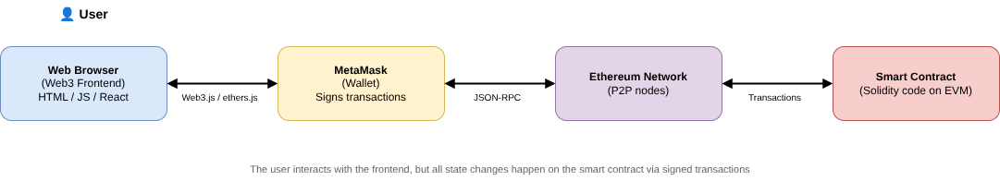</p> </div> <div class="fragment" data-fragment-index="0"> Examples of DApps: - **DeFi** (Decentralized Finance): Uniswap, Aave, Compound - **NFT Marketplaces**: OpenSea, Rarible - **Games**: CryptoKitties, Axie Infinity - **DAOs** (Decentralized Autonomous Organizations) <br/> </div> </div> --- ## Smart Contract Example: A Simple Faucet <div class="content-center"> A faucet is a contract that dispenses small amounts of ETH to anyone who asks: ```solidity // SPDX-License-Identifier: MIT pragma solidity ^0.8.0; contract Faucet { // Accept any incoming amount receive() external payable {} // Give out ether to anyone who asks function withdraw(uint withdraw_amount) public { // Limit withdrawal amount require(withdraw_amount <= 0.1 ether); // Send the amount to the requester payable(msg.sender).transfer(withdraw_amount); } } ``` <div class="fragment" data-fragment-index="0"> Key elements: - `receive()`: allows the contract to accept ETH - `msg.sender`: the address of whoever called the function - `require()`: reverts the transaction if the condition is false - `payable(...).transfer(...)`: sends ETH to an address </div> </div> --- ## Smart Contract Lifecycle <div class="content-center"> 1. **Write** the contract in Solidity (e.g., using the Remix web IDE at [remix.ethereum.org](https://remix.ethereum.org)) 2. **Compile** the Solidity code into EVM bytecode 3. **Deploy** the contract by sending a transaction to address `0x0` with the bytecode as data 4. The contract gets a unique **address** on the blockchain 5. **Interact** with the contract by sending transactions that call its functions <br/> <div class="fragment" data-fragment-index="0"> Once deployed, the code is **immutable** — bugs cannot be fixed. This makes **security auditing** critical before deployment. </div> </div> --- ## Smart Contract Security Concerns <div class="content-center"> Smart contracts handle real money, so bugs can be **catastrophic**. Common vulnerabilities: - **Re-entrancy**: a malicious contract calls back into the victim contract before the first call finishes (e.g., the DAO hack, 2016 — $60M stolen) - **Integer overflow/underflow**: arithmetic errors in older Solidity versions - **Unchecked external calls**: assuming a call succeeded when it didn't - **Access control issues**: missing permission checks on sensitive functions <br/> <div class="fragment" data-fragment-index="0"> The **immutability** of smart contracts means that once deployed, vulnerabilities cannot be patched — funds may be permanently at risk. </div> </div> --- <!-- .slide: data-state="break-blue hide-controls" --> # NFTs --- ## Tokens on Ethereum <div class="content-center"> Ethereum allows the creation of **tokens** — digital assets managed by smart contracts. Two main token standards: - **ERC-20** (Fungible Tokens): every token is identical and interchangeable - Examples: USDT, USDC, UNI, LINK - Like digital banknotes: one dollar is the same as any other dollar <br/> <div class="fragment" data-fragment-index="0"> - **ERC-721** (Non-Fungible Tokens — NFTs): each token is **unique** and not interchangeable - Examples: CryptoPunks, Bored Ape Yacht Club, digital art - Like a unique painting: there is only one original Mona Lisa <br/> </div> </div> --- ## What is an NFT? <div class="content-center"> An **NFT** (Non-Fungible Token) is a unique digital asset stored on the blockchain. An NFT is essentially a smart contract that maps **token IDs** to **owner addresses**: ```solidity // Simplified ERC-721 mapping(uint256 => address) private _owners; // tokenId → owner mapping(uint256 => string) private _tokenURIs; // tokenId → metadata URI ``` <br/> <div class="fragment" data-fragment-index="0"> Key characteristics: - **Unique**: each token has a distinct ID - **Ownable**: ownership is recorded on the blockchain - **Transferable**: can be sent to another address (or sold) - **Verifiable**: anyone can check who owns a given NFT <br/> </div> <div class="fragment" data-fragment-index="1"> The NFT itself is **on-chain** (the ownership record), but the associated digital content (image, video) is usually stored **off-chain** (e.g., IPFS) and referenced by a URI in the token metadata. </div> </div> --- ## NFT Use Cases <div class="content-center"> - **Digital Art**: artists can sell unique works and receive royalties on resales - **Collectibles**: digital trading cards, virtual pets, profile pictures - **Gaming**: in-game items, characters, virtual land - **Music & Media**: musicians sell albums/tracks as NFTs - **Identity & Certificates**: diplomas, event tickets, proof of attendance - **Real-world assets**: tokenizing real estate, luxury goods <br/> <div class="fragment" data-fragment-index="0"> **Criticism**: many NFT projects have been criticized for speculation, environmental concerns (PoW-era), and the fact that "owning" an NFT doesn't always grant copyright or exclusive access to the underlying content. </div> </div> --- <!-- .slide: data-state="break-blue hide-controls" --> # Interacting with Smart Contracts --- ## Block Explorers: Etherscan <div class="content-center"> A **block explorer** is a web interface to read blockchain data without running a full node. **Etherscan** (https://etherscan.io) is the most popular Ethereum block explorer: - Search for **addresses**, **transactions**, **blocks**, or **contracts** - View transaction history, balances, and token holdings - Read and write to **verified smart contracts** directly from the browser - View contract source code (if verified by the developer) <br/> <div class="fragment" data-fragment-index="0"> For testnets (Sepolia, Goerli), use: - https://sepolia.etherscan.io - https://goerli.etherscan.io </div> </div> --- ## NFT Metadata: `tokenURI` <div class="content-center"> ERC-721 NFTs store metadata (name, description, image, attributes) via the `tokenURI(uint256 tokenId)` function. The `tokenURI` function returns a **URI** (Uniform Resource Identifier) pointing to the metadata: - **IPFS**: `ipfs://Qm...` — decentralized storage - **HTTP**: `https://example.com/metadata/123.json` — centralized server - **Data URI**: `data:application/json;base64,...` — metadata encoded directly on-chain <br/> <div class="fragment" data-fragment-index="0"> The metadata is typically JSON: ```json { "name": "My NFT #123", "description": "...", "image": "ipfs://...", "attributes": [ {"trait_type": "Color", "value": "Blue"}, {"trait_type": "Rarity", "value": "Legendary"} ] } ``` </div> </div> --- ## Calling Contracts Programmatically <div class="content-center"> You can interact with contracts using libraries like **web3.py** (Python) or **ethers.js** (JavaScript). **Python example** (reading `tokenURI`): ```python from web3 import Web3 import base64, json w3 = Web3(Web3.HTTPProvider("https://eth-sepolia.g.alchemy.com/v2/YOUR_KEY")) # Minimal ABI - only the function you need abi = [{"inputs":[{"name":"tokenId","type":"uint256"}], "name":"tokenURI","outputs":[{"name":"","type":"string"}], "stateMutability":"view","type":"function"}] contract = w3.eth.contract(address="0x...", abi=abi) uri = contract.functions.tokenURI(0).call() print(uri) ``` <br/> <div class="fragment" data-fragment-index="0"> The ABI (Application Binary Interface) describes the contract's functions and is needed to encode/decode calls. </div> </div> --- ## RPC Providers: Connecting to the Blockchain <div class="content-center"> To interact with Ethereum from your code, you need to connect to a **node** that has a copy of the blockchain. <br/> A **Web3.HTTPProvider** (or similar) is a connection to an Ethereum node via HTTP/HTTPS: ```python w3 = Web3(Web3.HTTPProvider("https://eth-sepolia.g.alchemy.com/v2/YOUR_KEY")) ``` <br/> <br/> This URL points to an **RPC endpoint** (Remote Procedure Call) — a server that accepts requests like: - `eth_call` — read contract state (no transaction) - `eth_sendRawTransaction` — submit a signed transaction - `eth_getBalance` — check an address's ETH balance - `eth_getTransactionReceipt` — check if a transaction succeeded </div> --- <div class="content-center"> **Why is it needed?** Running your own Ethereum node requires: - Downloading the entire blockchain (~1TB for mainnet) - Keeping it synced 24/7 - Significant CPU, RAM, and bandwidth Most developers use **RPC providers** instead: - **Alchemy** (https://alchemy.com) — free tier available - **Infura** (https://infura.io) — popular, free tier - **QuickNode**, **Ankr**, **Chainstack** — alternatives <br/> <div class="fragment" data-fragment-index="0"> The provider acts as a **gateway** to the blockchain: your code sends JSON-RPC requests, the provider's node executes them and returns results. You get all the benefits of a full node without running one yourself. </div> </div> --- ## The Frontend is NOT a Security Boundary <div class="content-center"> A critical principle in blockchain security: **never trust the frontend**. Any restrictions enforced only in JavaScript (client-side) can be trivially bypassed: - **Input validation** (e.g., "max 100 tokens") — send 1000 directly to the contract - **Button disabling** (e.g., "you can only vote once") — call the vote function multiple times If the smart contract doesn't enforce a rule, **the rule doesn't exist**. <br/> <div class="fragment" data-fragment-index="0"> <div class="cell-center"> > *The blockchain doesn't care about your UI. Only the smart contract logic matters.* </div> </div> </div> --- <!-- .slide: data-state="break-blue hide-controls" --> # Critical Perspectives on Blockchain --- ## Blockchain and the Dark Web <div class="content-center"> Blockchain's **pseudonymity** (not anonymity) attracted early adoption on illicit markets. - **Silk Road** (2011–2013): the first major dark-web marketplace, exclusively using Bitcoin — shut down by the FBI - Bitcoin transactions are **publicly visible** on the blockchain; blockchain analytics firms (Chainalysis, Elliptic) can trace flows and de-anonymize wallets - **Privacy coins** (Monero, Zcash) were designed to add true anonymity; several exchanges have delisted them under regulatory pressure <br/> <div class="fragment" data-fragment-index="0"> The narrative that "crypto = criminal money" is **overstated**: the share of crypto volume linked to illicit activity is estimated at 0.34% (Chainalysis 2024) — far below the cash economy. </div> </div> --- ## Should Crypto Be Legal Tender? <div class="content-center"> A handful of countries have officially recognized Bitcoin (or other cryptocurrencies) as **legal tender**: - **El Salvador** (2021): first country to adopt Bitcoin as legal tender alongside the US dollar — uptake has been limited and the experiment is controversial - **Central African Republic** (2022): adopted Bitcoin as legal tender; largely symbolic due to low internet penetration - Most countries treat crypto as a **commodity or investment asset**, not a currency <br/> <div class="fragment" data-fragment-index="0"> The main objections to using crypto as money: - **Volatility**: the value can halve in weeks — a poor store of value for day-to-day transactions - **No monetary policy**: governments cannot adjust supply to stabilize the economy - **Scalability**: Bitcoin processes 7 tx/s vs. Visa's 24,000 tx/s </div> </div> --- ## Extreme Volatility <div class="content-center"> Cryptocurrencies are among the most volatile assets ever traded: | Event | Impact | |-------|--------| | Bitcoin 2017 bull run | $1K → $20K in 12 months | | Bitcoin 2018 crash | $20K → $3K (−85%) in 12 months | | COVID crash (Mar 2020) | Bitcoin −50% in 48 hours | | 2021 bull run | Bitcoin $10K → $69K | | 2022 bear market | Bitcoin $69K → $16K (−77%) | | 2024–2025 rally | Bitcoin $40K → $100K+ | <br/> <div class="fragment" data-fragment-index="0"> This volatility is driven by speculation, thin liquidity, leverage, and the absence of fundamental valuation anchors. It makes crypto **unsuitable as a unit of account** and creates systemic risk for retail investors. </div> </div> --- ## The Current Regulatory Landscape <div class="content-center"> Most governments have converged on treating cryptocurrencies as **investment assets**, not currencies: - **Taxation**: capital gains tax applies on disposal; income tax on mining/staking rewards (EU MiCA framework, US IRS guidance, Italian DDL Crypto 2023) - **KYC/AML**: exchanges must verify user identity (Know Your Customer) and report suspicious activity - **Securities law**: many tokens may qualify as unregistered securities (Howey test in the US — ongoing SEC enforcement actions) - **EU MiCA** (2024): comprehensive crypto-asset regulation covering issuers and service providers <br/> <div class="fragment" data-fragment-index="0"> The regulatory trend is toward **increasing oversight**, not prohibition. The question is no longer *whether* to regulate, but *how*. </div> </div> --- ## Stablecoins: Crypto Without the Volatility? <div class="content-center"> A **stablecoin** is a cryptocurrency pegged to a stable asset (usually the US dollar) to eliminate price volatility. Two main approaches: 1. **Fiat-backed** (e.g., USDT Tether, USDC): each token is supposedly backed 1:1 by dollars held in reserve - Requires trusting a **central issuer** — contradicts the decentralization promise - Tether has faced persistent questions about whether reserves actually exist <br/> 2. **Algorithmic** (e.g., TerraUSD / UST): the peg is maintained by smart contract mechanisms and a companion token - In May 2022, **TerraUSD collapsed** from 1 dollar to near zero in 72 hours, wiping out 40B in value - The algorithm entered a "death spiral": selling pressure broke the peg, triggering more selling <br/> <div class="fragment" data-fragment-index="0"> Stablecoins are controversial because they either re-introduce **centralization and counterparty risk** (fiat-backed) or introduce **new systemic fragility** (algorithmic). They are not a free lunch. </div> </div> --- ## Most Tokens, NFTs and DApps are Scams <div class="content-center"> The permissionless nature of blockchains means anyone can deploy a token or NFT project — and most do so with fraudulent intent. Common fraud patterns: - **Pump and dump**: insiders accumulate a token cheaply, hype it on social media, sell at the peak — retail investors hold worthless tokens - **Rug pull**: developers launch a DeFi project, attract liquidity, then drain the liquidity pool and disappear overnight - **NFT wash trading**: creators trade NFTs between their own wallets to inflate apparent value before selling to real buyers - **Celebrity endorsements**: paid promotions from celebrities without disclosure (e.g., Kim Kardashian fined $1.26M by the SEC in 2022) <br/> <div class="fragment" data-fragment-index="0"> According to Chainalysis (2023), **24.2B** was received by scam addresses in 2023 alone. The NFT market collapsed 97% from peak (2021→2023): most projects are now effectively **worthless**. </div> </div> --- ## The CEX Problem: "Not Your Keys, Not Your Coins" <div class="content-center"> Despite the decentralized ideals, most users interact with blockchain through **Centralized Exchanges (CEX)**. A CEX holds your private keys on your behalf — you have an IOU, not actual crypto. This re-introduces all the risks of traditional finance: | Exchange | Year | Event | Loss | |----------|------|-------|------| | **Mt. Gox** | 2014 | Hacked; 850,000 BTC stolen | 450M at the time | | **Bitfinex** | 2016 | Hacked | $72M | | **QuadrigaCX** | 2019 | CEO dies; only person with keys | $190M lost | | **Celsius** | 2022 | Bankruptcy; user funds frozen | $1.7B | | **FTX** | 2022 | Fraud; customer funds misused | $8B+ | <br/> <div class="fragment" data-fragment-index="0"> The FTX collapse (Nov 2022) was the largest fraud in crypto history. Founder **Sam Bankman-Fried** was sentenced to 25 years in prison. Millions of retail customers lost their savings overnight. </div> </div> --- <!-- .slide: data-state="break-blue hide-controls" --> # Popular DApps in Practice --- ## Decentralized Exchanges (DEX) <div class="content-center"> A **DEX** allows trading tokens directly on-chain, with no intermediary holding your funds. The most important innovation is the **Automated Market Maker (AMM)**: - No order book — instead, liquidity is provided by users depositing token pairs into a **liquidity pool** (smart contract) - Price is set by a formula: $x \\cdot y = k$ (constant product, Uniswap v2) - Anyone can **provide liquidity** and earn a share of trading fees - Anyone can **swap** tokens trustlessly, 24/7, without KYC <br/> <div class="fragment" data-fragment-index="0"> **Uniswap** is the largest DEX (launched 2018, Ethereum). Others include **Curve** (stablecoin swaps), **PancakeSwap** (BNB Chain), **dYdX** (perpetuals). Risks: **impermanent loss** for liquidity providers, **MEV** (miners/validators front-run trades), **smart contract bugs**. </div> </div> --- ## Sorare: Football NFT Fantasy League <div class="content-center"> **Sorare** is a fantasy football game where player cards are NFTs on Ethereum. How it works: - Each footballer is represented as a **limited-edition NFT card** (Common, Rare, Super Rare, Unique) - Users assemble teams of 5 and compete in weekly tournaments based on real-world player performance - Cards are bought/sold on Sorare's marketplace; rare cards have sold for **hundreds of thousands of dollars** - Rewards are paid in ETH or additional NFT cards <br/> <div class="fragment" data-fragment-index="0"> Sorare raised **$680M** in 2021 at a $4.3B valuation. **Regulatory scrutiny**: the UK Gambling Commission investigated Sorare in 2022; similar reviews in other countries. The model blurs the line between gaming, trading, and gambling. Card values have dropped 80–90% from 2021 peaks — following the same pattern as most NFT projects. </div> </div> --- ## Polymarket: Decentralized Prediction Market <div class="content-center"> **Polymarket** (on Polygon) lets users bet USDC on real-world event outcomes: elections, sports, economic events. How it works: - A **market** is a binary question (e.g., "Will X win the 2024 US election?") - Users buy **YES** or **NO** shares; price reflects implied probability - When the event resolves, winning shares pay out $1 USDC each - Resolution is handled by **UMA Protocol** oracles: first a proposed answer, then a dispute window <br/> <div class="fragment" data-fragment-index="0"> Polymarket gained mainstream attention in the 2024 US election, with over **$3.5B** bet on political markets. Journalists cited it as more accurate than polls. </div> </div> --- ## Polymarket: The Governance Problem <div class="content-center"> Polymarket relies on **UMA's Optimistic Oracle** for dispute resolution — and this is where it breaks down. The resolution process: 1. When a market expires, anyone can **propose** an answer 2. There is a challenge window: anyone can **dispute** by staking UMA tokens 3. If disputed, UMA token holders **vote** on the correct answer 4. The majority vote wins — losers' stakes are slashed; winners are rewarded <br/> <div class="fragment" data-fragment-index="0"> The fundamental flaw: **token-weighted voting ≠ truth**. - Large UMA holders (**whales**) can vote in whichever direction is financially convenient for *their own Polymarket positions* - This is a direct conflict of interest: the oracle that is supposed to resolve bets can be manipulated by the people who placed the largest bets - The incentive to vote correctly only holds if the reward for honesty exceeds the profit from manipulation </div> </div> --- ## Polymarket: Real Governance Failures <div class="content-center"> Several high-profile disputes show the problem is not theoretical: - **Azuki NFT floor price market (2023)**: UMA voters resolved against what most observers considered the correct answer, favouring the outcome that benefited large token holders' positions - **Argentina election market (2023)**: disputed resolution led to months of controversy and community accusations of manipulation - **General pattern**: when stakes are high, whale voters coordinate off-chain (Discord, Telegram) to vote for the profitable outcome rather than the true one <br/> <div class="fragment" data-fragment-index="0"> The deeper problem: **governance by financial stake is not governance by knowledge**. Those with the most to gain from a false resolution are also those with the most tokens to impose it. "Decentralized" oracle resolution can be less reliable than a single trusted arbitrator. </div> <div class="fragment" data-fragment-index="1"> <div class="cell-center"> > *"Code is law" — until the whales decide the law."* </div> </div> </div>